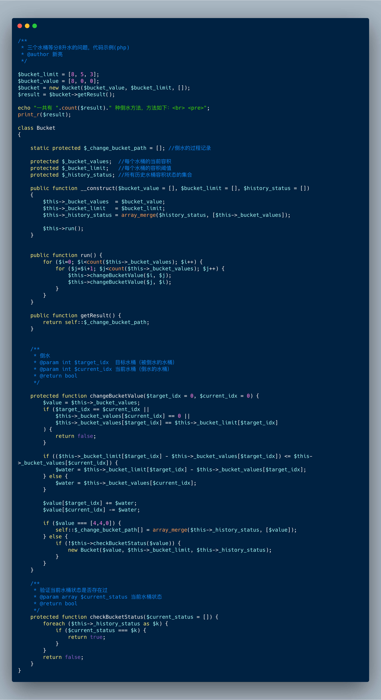

目录
有三个容积分别为3升、5升、8升的水桶，其中容积为8升的水桶中装满了水，容积为3升和容积为5升的水桶都是空的。三个水桶都没有刻度，现在需要将大水桶中的8升水等分成两份，每份都是4升水，附加条件是只能这三个水桶，不能借助其他辅助容器。
“恩，是的，这是一个很经典的问题。”
“然而，我们并不能想全，不信请继续往下看。”
”废话不多说，直接看方法吧。“
我相信答案肯定不止两个，到底有多少种答案？
带着这个疑问，我们来设计一个算法吧。
解决这个问题的关键是怎么通过倒水凑出确定的1升水或能容纳1升水的空间。
例如，当8L水桶或5L水桶或3L水桶有1L水时，都能快速倒出4L水。
“穷举法”
水桶初始状态：8L水桶装满水，3L和5L的水桶为空。
水桶最终状态：3L水桶为空，5L和8L的水桶各4L水。
假设将每个状态下三个水桶中的水的体积作为status。
从 $status = array(8,0,0) 得到 $status = array(4,4,0)。
当然还会有一些限制：
1.各个水桶的都有最大值：
0 <= status[0] <= 8;
0 <= status[1] <= 5;
0 <= status[2] <= 3;
2.当前倒水之后各个水桶的状态，与历史倒水之后各个水桶的状态，不能相同。
3.当前水桶为空时，不能倒给其他水桶。
4.当前水桶为最大容积时，其他水桶不能再向这个水桶倒水。

一共有 16 种倒水方法，方法如下：
...
（16种方法，贴上去太长了，大家在本地尝试下，如需要源码，请关注公众号进行留言。）
运行代码之后，一共找到了 16 种倒水的方法，最快的方法需要 7 个步骤。
“怎么样，是不是没想到会有这么多方法吧，去考考你身边的小伙伴吧。”
本文欢迎转发，转发请注明作者和出处，谢谢！